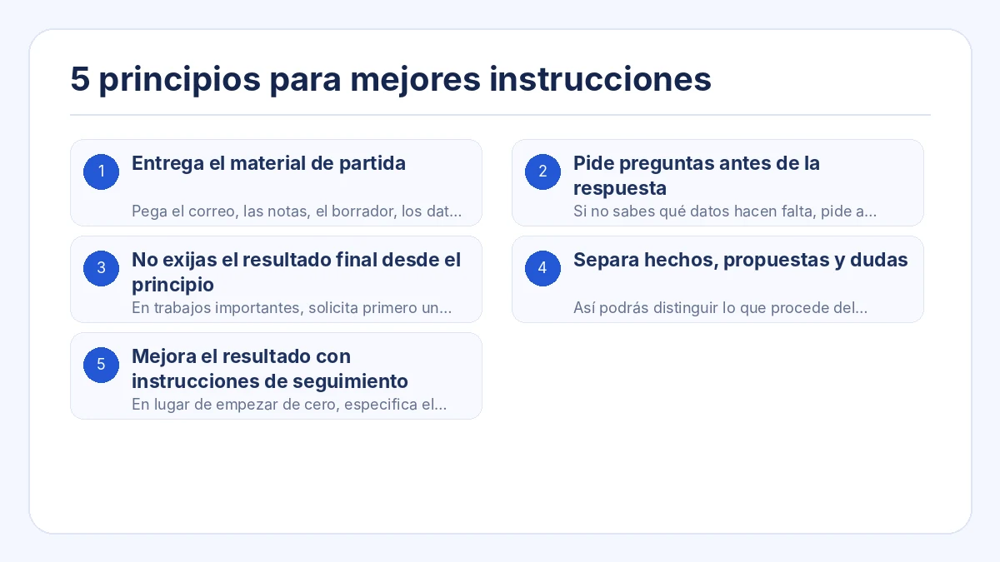
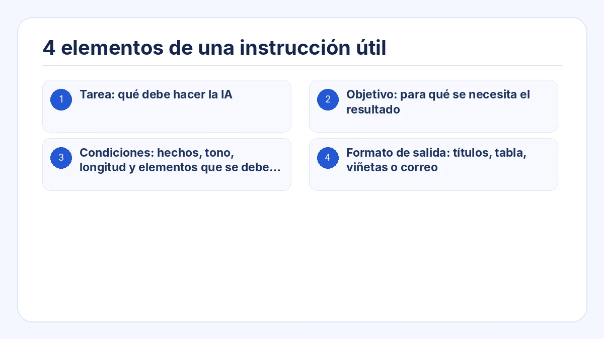
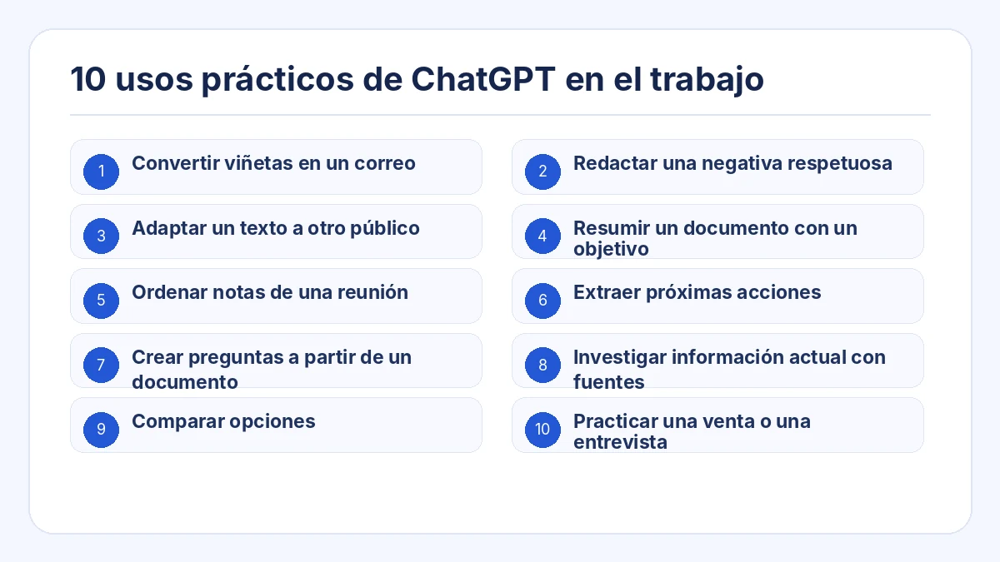
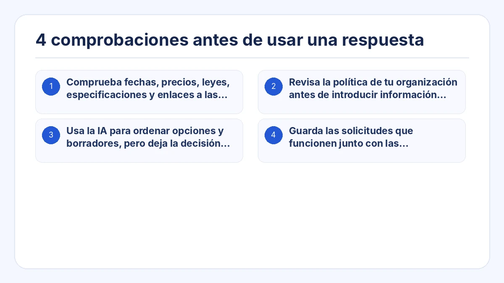

Esta guía muestra una forma práctica de usar ChatGPT en el trabajo. El objetivo no es memorizar un “prompt mágico”, sino aportar el contexto, las condiciones y el formato de salida que necesita cada tarea.
Puedes copiar el ejemplo, sustituir los datos entre corchetes y revisar el resultado antes de utilizarlo en una situación real.
Puntos clave
- Entrega el material de partida en vez de pedir a la IA que invente todo desde cero.
- Pide que haga preguntas cuando falte información antes de redactar la respuesta final.
- Divide los trabajos complejos en planificación, revisión y redacción.
- Separa hechos, propuestas y puntos no confirmados cuando la precisión sea importante.
- Revisa la primera respuesta y da instrucciones concretas para mejorarla.

1. Entrega el material de partida
Pega el correo, las notas, el borrador, los datos o los puntos en los que debe basarse la respuesta. Indica que no añada hechos que no estén en el material.
2. Pide preguntas antes de la respuesta
Si no sabes qué datos hacen falta, pide a ChatGPT que detecte la información ausente y formule un máximo de tres preguntas antes de responder.
3. No exijas el resultado final desde el principio
En trabajos importantes, solicita primero un esquema o una lista de contenidos. Confirma la dirección y después pide el texto final.
4. Separa hechos, propuestas y dudas
Así podrás distinguir lo que procede del material, lo que propone la IA y lo que todavía necesita una comprobación humana.
5. Mejora el resultado con instrucciones de seguimiento
En lugar de empezar de cero, especifica el cambio: acortar, usar un tono más sereno, poner la conclusión al principio o eliminar afirmaciones sin respaldo.
4 elementos de una instrucción útil
Sustituye las partes entre corchetes por tu situación. Pide a la IA que no invente datos y que separe las preguntas pendientes.
- Tarea: qué debe hacer la IA
- Objetivo: para qué se necesita el resultado
- Condiciones: hechos, tono, longitud y elementos que se deben evitar
- Formato de salida: títulos, tabla, viñetas o correo

## Tarea
Redacta una respuesta al mensaje del cliente que aparece a continuación.
## Objetivo
Reconocer el problema, explicar lo que está confirmado y dejar claro el siguiente paso.
## Material de partida
[Pega el mensaje del cliente y los hechos internos confirmados]
## Condiciones
- No prometas un plazo de recuperación que no esté confirmado.
- Separa los hechos confirmados de los puntos que siguen en investigación.
- Utiliza un tono profesional y sereno.
- No añadas datos que no aparezcan en el material.
## Formato de salida
1. Asunto
2. Cuerpo del correo
3. Puntos que deben confirmarse antes del envío10 usos prácticos de ChatGPT en el trabajo

1. Convertir viñetas en un correo
Indica el destinatario, el objetivo, los puntos que deben incluirse, la fecha y el tono.
2. Redactar una negativa respetuosa
Explica qué no es posible, el motivo que se puede compartir y una alternativa realista.
3. Adaptar un texto a otro público
Conserva los hechos y cambia la explicación para un cliente, un directivo o una persona principiante.
4. Resumir un documento con un objetivo
Define quién leerá el resumen y qué decisión debe tomar.
5. Ordenar notas de una reunión
Extrae decisiones, tareas, responsables, fechas y asuntos pendientes.
6. Extraer próximas acciones
Separa la información que solo debe leerse de las tareas que alguien debe realizar.
7. Crear preguntas a partir de un documento
Detecta lagunas, contradicciones, riesgos y puntos que requieren confirmación.
8. Investigar información actual con fuentes
Pide fechas, fuentes primarias y una separación clara entre hechos e interpretación.
9. Comparar opciones
Define los criterios de comparación y qué condiciones tienen más peso.
10. Practicar una venta o una entrevista
Establece el papel, el escenario, las reglas de preguntas y los criterios de evaluación.
4 comprobaciones antes de usar una respuesta
- Comprueba fechas, precios, leyes, especificaciones y enlaces a las fuentes.
- Revisa la política de tu organización antes de introducir información confidencial.
- Usa la IA para ordenar opciones y borradores, pero deja la decisión final en manos de una persona responsable.
- Guarda las solicitudes que funcionen junto con las comprobaciones y cambios que hicieron útil el resultado.

Preguntas frecuentes
¿Un prompt más largo siempre produce una respuesta mejor?
No. Es útil cuando contiene la información necesaria para la tarea. Un exceso de contexto puede ocultar las condiciones importantes.
¿Qué hago si la respuesta no coincide con lo que esperaba?
Describe la diferencia exacta. Pide menos longitud, otro público, una estructura más clara o la separación entre hechos y propuestas.
¿Cómo uso ChatGPT si no sé qué debo pedir?
Pide que te pregunte primero: “Hazme una pregunta cada vez hasta tener suficiente información para completar esta tarea”.
Crea instrucciones de IA listas para el trabajo a partir de una tarea
Crea instrucciones estructuradas sin empezar desde una página en blanco
Prompt Ready incluye usos como responder mensajes, ordenar reuniones, adaptar textos, comparar, investigar y practicar conversaciones. Elige el uso, añade el material y las condiciones y copia la solicitud para la IA que ya utilizas.
Prompt Ready es una aplicación para Windows y macOS que ayuda a crear instrucciones estructuradas para ChatGPT, Gemini, Claude y otros servicios de IA. Elige una tarea, añade el texto de origen y las condiciones, y copia una instrucción lista para usar.
Prompt Ready procesa el texto de forma local y no lo envía automáticamente a un servicio de IA externo ni al servidor del desarrollador. Cuando pegues la instrucción en un servicio de IA, se aplicará la política de datos de ese servicio.
Empieza con una tarea real y mejora la solicitud mediante el diálogo
Elige una tarea que ya realizas, como responder a un cliente, ordenar notas o comparar alternativas. Añade el objetivo, las condiciones y el formato, y considera la primera respuesta un borrador.